Research & Publications [Back to Home]
* Equal contribution, † Corresponding author
Research Topics:
Benchmarks & Datasets
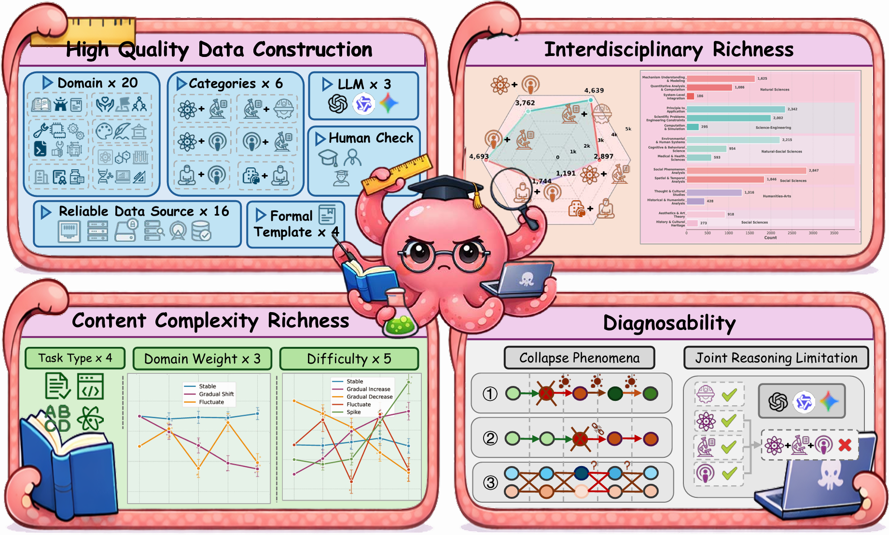
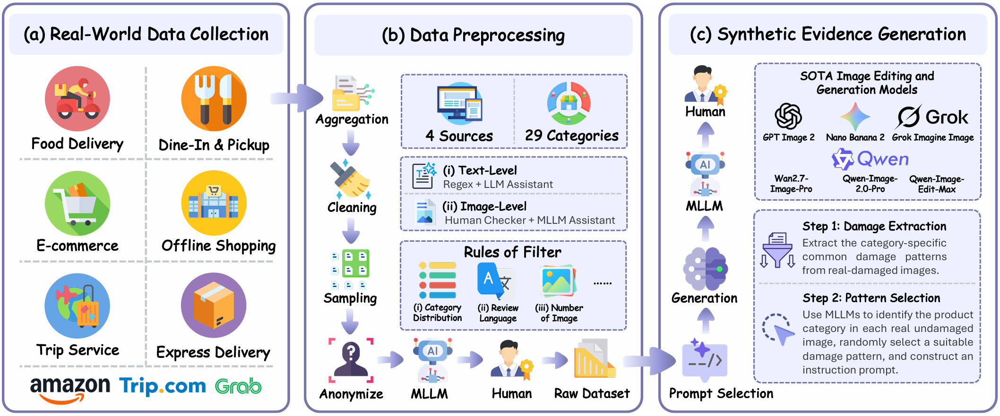
LLM & Agent Security


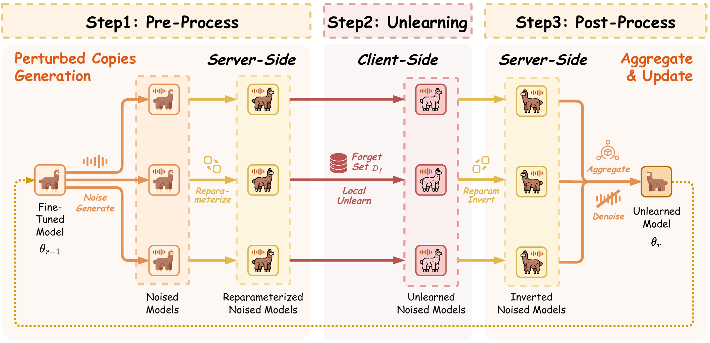
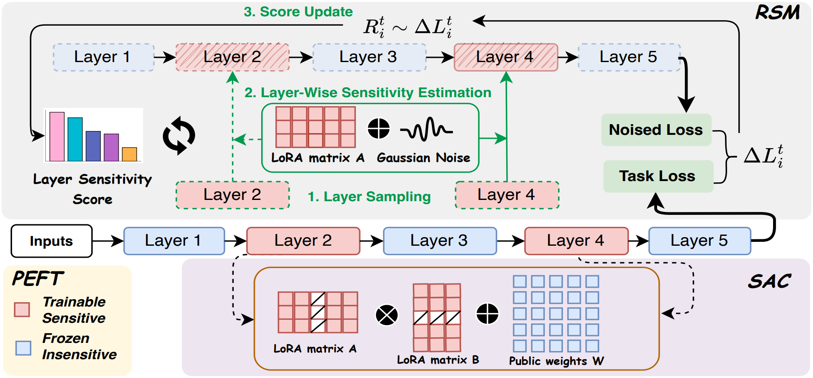
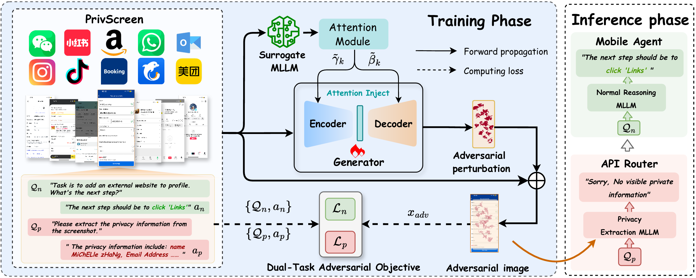
Distributed AI Security

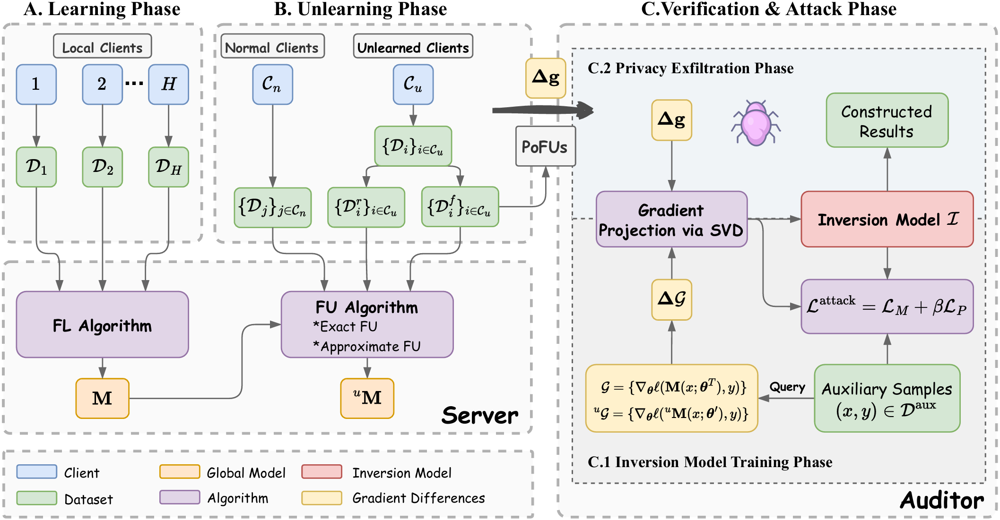
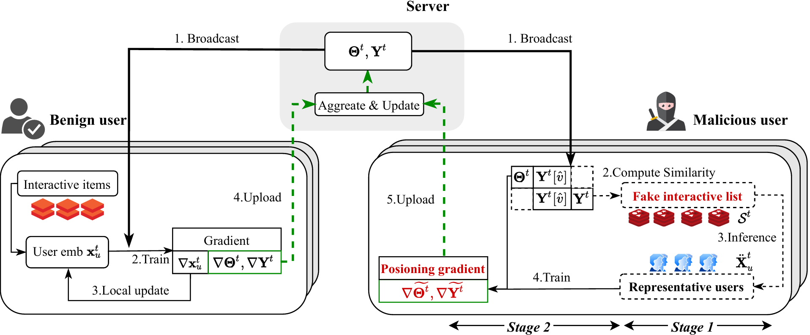

Privacy-Preserving Computation
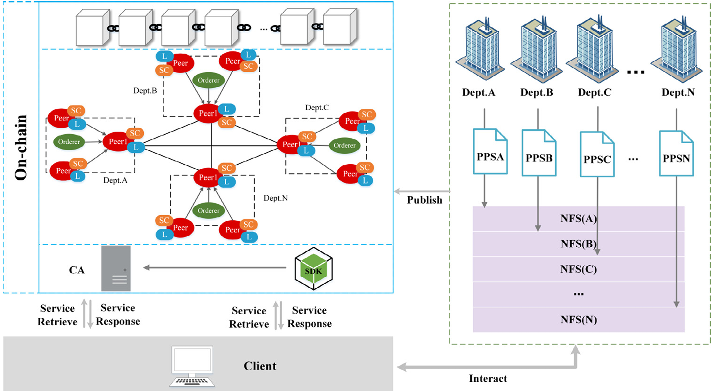
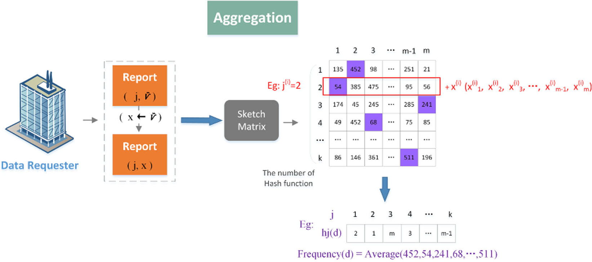
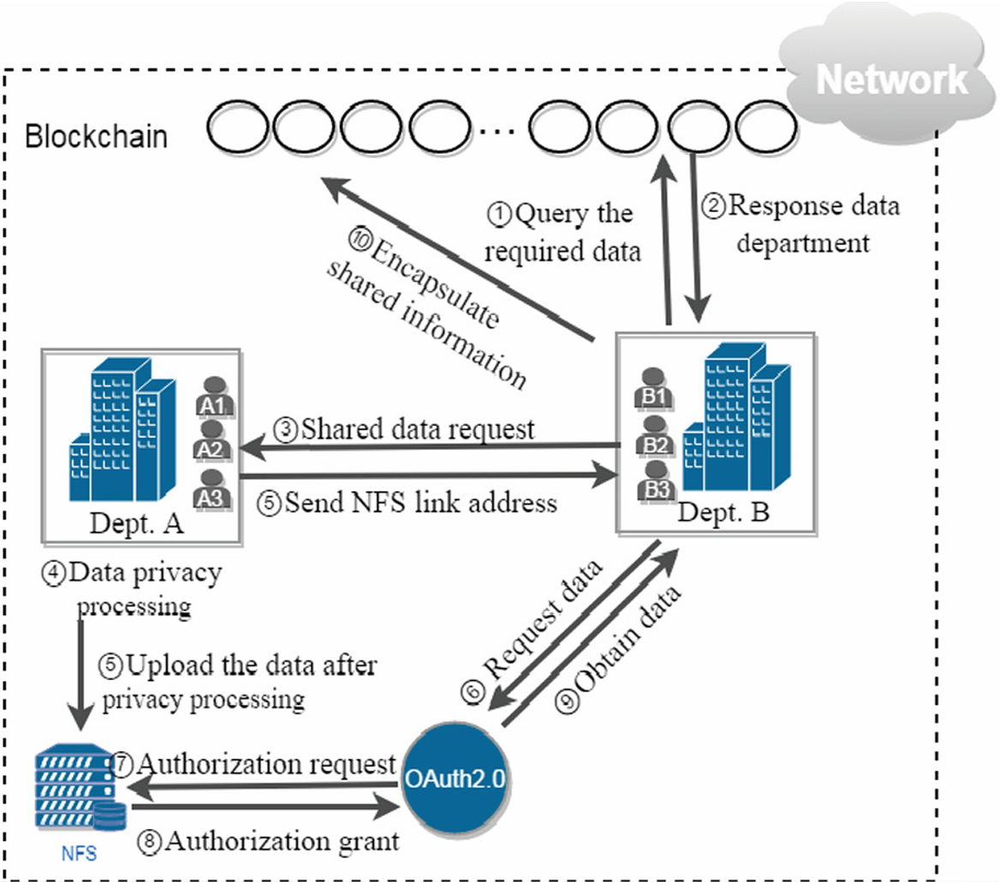
Model Efficiency
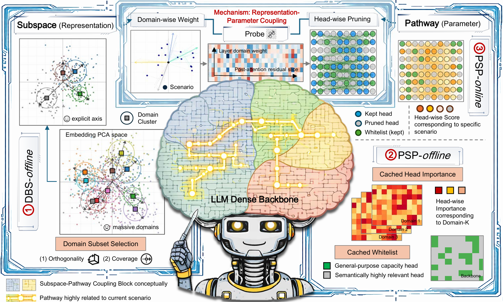